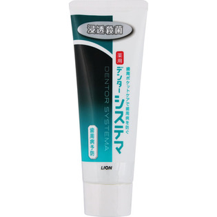

返回列表
产品名称：システマ ハミガキ

ライオン システマ ハミガキ １３０ｇ（医薬部外品）
メーカー ライオン
JANコード 4903301325321
商品の特徴
歯周ポケットケアで歯周病を防ぐ
浸透殺菌
薬用
- 成分・分量
- 【成分】
湿潤剤：ソルビット液、PG
清掃剤：無水ケイ酸A
粘度調整剤：無水ケイ酸、キサンタンガム
発泡剤：ラウリル硫酸Na、POE硬化ヒマシ油、POEステアリルエーテル
香味剤：香料(メディカルペパーミントタイプ)、サッカリンNa
浸透剤：PEG4000/粘膜剤：ポリアクリル酸Na、アルギン酸Na
安定剤：酸化TI
清涼剤：メントール
薬用成分：フッ化ナトリウム、イソプロピルメチルフェノール、イプロシン・アミノカプロン酸
着色材：緑3、黄4
- 用法及び用量
- 適量をハブラシにとり、歯及び口腔内を清掃してください。